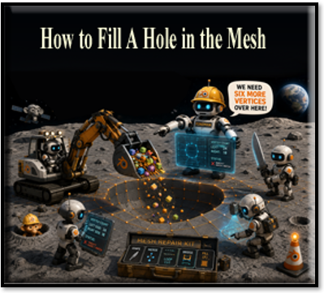
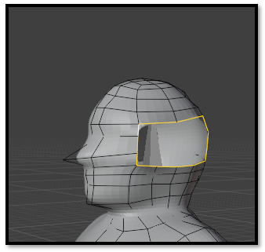
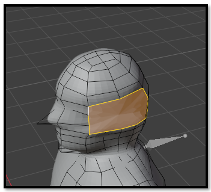
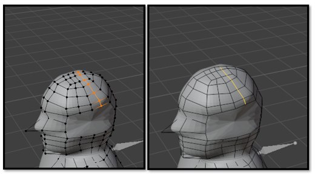
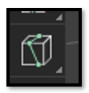
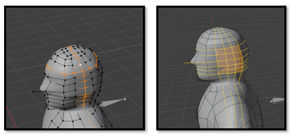
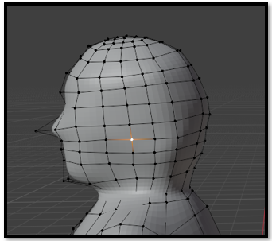

~6 How to fill a hole in the Mesh~
10/12/2026

You deleted a malformed ear from your model, and now you're staring at a giant hole in the side of the head. Don't panic! This tutorial shows one way to rebuild the missing topology and restore the mesh.

Select the entire edge loop around the opening and press F to create the initial face.

Before rebuilding the topology, make sure both sides of the opening contain the same number of vertices. If necessary, add edge loops so the vertex counts match. This will make reconnecting the mesh much easier.

Use the Knife Tool to reconnect the matching vertices and recreate the missing edge flow.
Watch it- The Knife Tool remains active after you finish making a cut. If you don't press Enter on your keyboard, you'll find yourself spinning around the viewport while frantically moving your mouse, trying to shake the darn thing off!

After creating the new edges, test the topology by Shift + Alt-clicking one of the loop cuts. If Blender selects the entire loop, you've successfully rebuilt the edge flow.

Move the new vertices until the surface blends smoothly into the surrounding head. This final adjustment removes bumps and restores the original shape.
